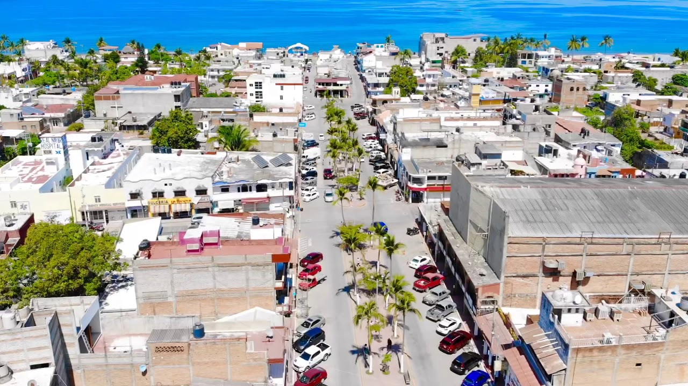
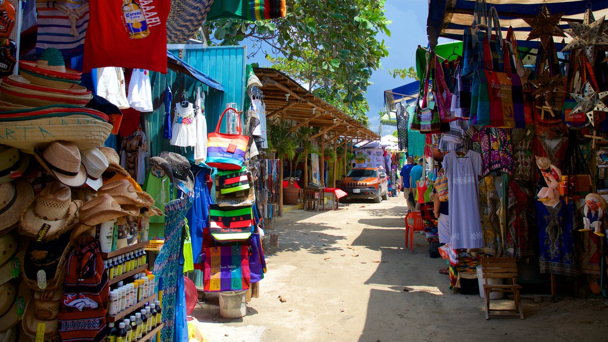
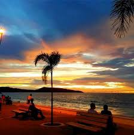
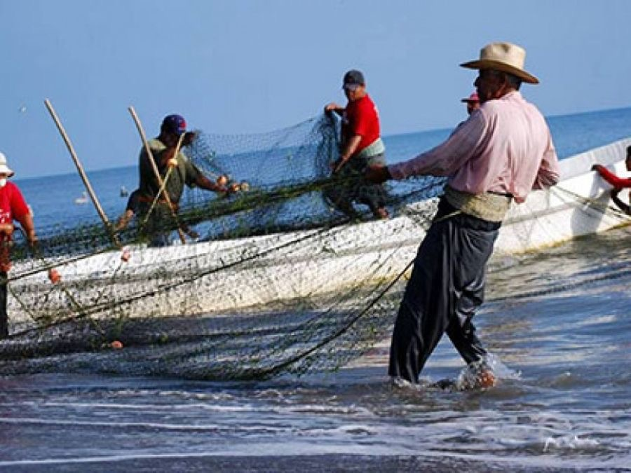
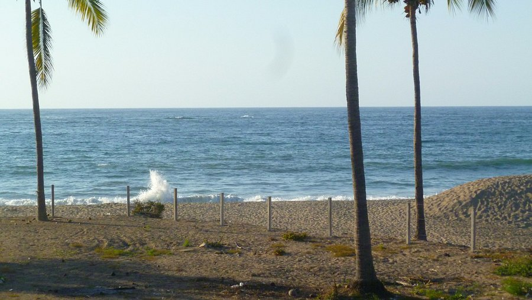
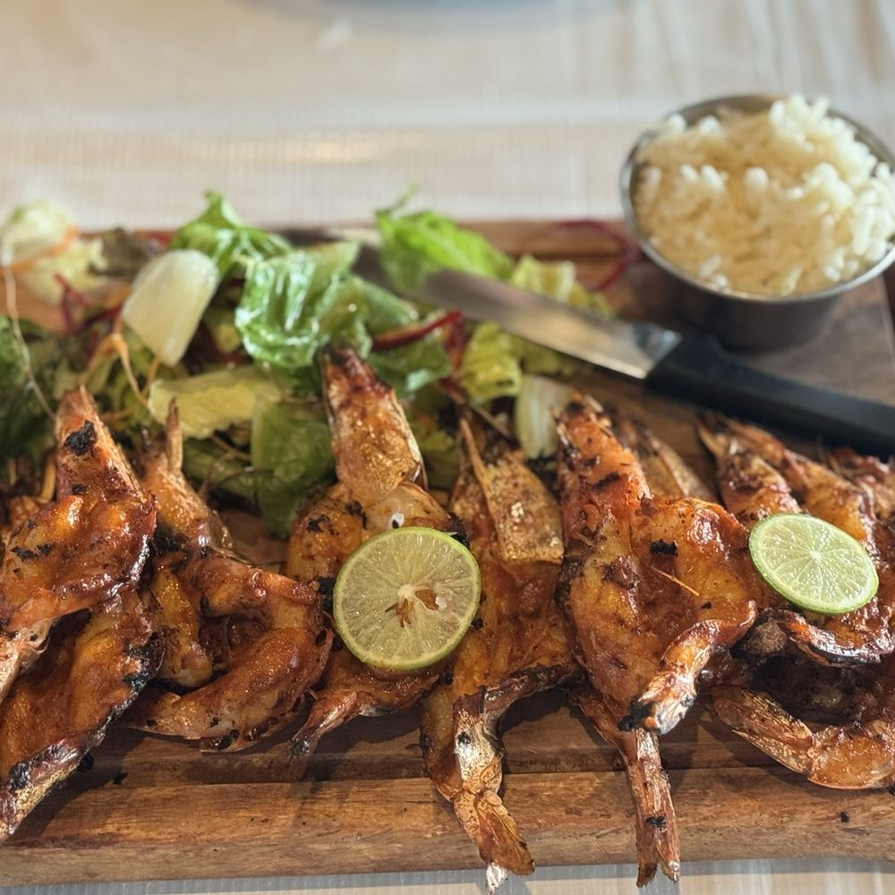

Donde la tradición mexicana se encuentra con el mar
A diferencia de los grandes resorts, La Peñita de Jaltemba conserva el alma de un verdadero pueblo costero mexicano. Aquí la vida transcurre tranquila entre calles empedradas y saludos amables.
Famosa por su espectacular malecón, sus atardeceres dorados y el vibrante tianguis dominical, La Peñita ofrece una experiencia genuina para quienes buscan conectar con la cultura local y disfrutar de una gastronomía excepcional.





Experiencias que no te puedes perder
El mercado al aire libre más grande de la zona. Encuentra artesanías, plata, comida y ropa cada domingo.
El punto de reunión perfecto para caminar y observar cómo el sol se oculta tras el horizonte del Pacífico.
Observa a los pescadores llegar con la captura del día o compra mariscos frescos directamente en la playa.
Una playa extensa y de oleaje suave, ideal para familias y largas caminatas sobre la arena.
Descubre el arte colorido de la región, con piezas únicas hechas a mano por artesanos locales.
El corazón del pueblo, donde se celebran fiestas patronales y se disfruta de la vida cotidiana.
La gastronomía en La Peñita es honesta y deliciosa. Desde puestos callejeros hasta restaurantes con vista al mar, aquí se come como en casa.

Todos los Domingos
A 5 min de Guayabitos
Bungalows y Hoteles Boutique
Foto en el Malecón
Descubre la calidez de nuestra gente y la belleza de nuestras tradiciones.
Ver en Google Maps